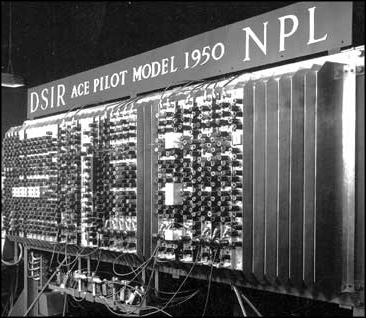
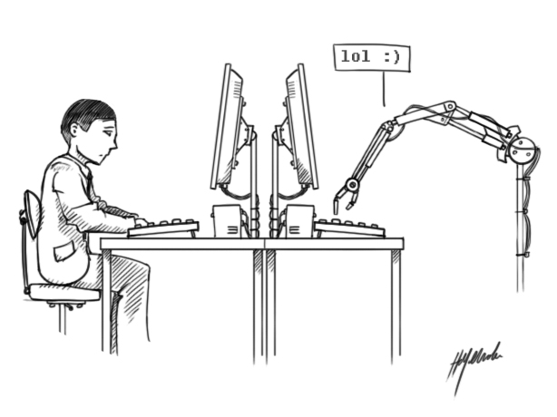
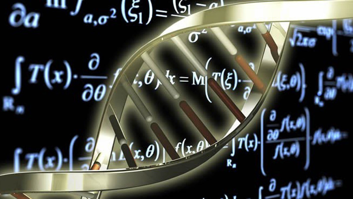

| APORTACIONES | DESCRIPCION | IMAGEN |
| Máquina de Turing | Una máquina de Turing es un dispositivo que manipula símbolos sobre una tira de cinta de acuerdo con una tabla de reglas.
puede ser adaptada para simular la lógica de cualquier algoritmo de computador y es particularmente útil en la explicación de las funciones de una CPU dentro de un computador. |  |
| Máquina universal de Turing | podía emular cualquier máquina de Turing al recibir como entrada la codificación de una máquina particular al mismo tiempo que los datos. Al almacenar el programa en el mismo formato que los datos, quedaban delimitados los papeles que iban a desempeñar el hardware (de propósito general) y el software (tanto de sistema como de aplicaciones) en la informática actual. |  |
| El concepto de hipercomputación | es la computación o resolución de las tareas que no puede resolver una máquina de Turing. Partiendo de esta idea, en 1938, Turing lanzó la idea de las máquinas oráculo, dedicadas a abordar las tareas que no pueden ser resueltas mediante un algoritmo. |  |
| Pilot Model ACE | El Pilot ACE fue uno de los primeros ordenadores construidos en el Reino Unido, en el Laboratorio Nacional de Física (NPL) a principios de los años 1950.
Fue una versión preliminar de la ACE ( Automatic Computing Engine) completa, que había sido diseñada por Alan Turing. |  |
| Test de Turing | La prueba de Turing o test de Turing es un examen de la capacidad de una máquina para exhibir un comportamiento inteligente similar al de un ser humano o indistinguible de este |  |
| Biología matemática | La Biología Matemática es un área científica que estudia los procesos biológicos utilizando técnicas matemáticas. En ella confluyen principalmente los intereses científicos de biólogos y matemáticos, y en menor medida de investigadores de otras ramas del conocimiento.
Al describir sistemas de una manera cuantitativa su comportamiento puede ser mejor simulado, y por lo tanto sus propiedades pueden ser predichas ya que pueden no ser evidentes para el experimentador. Esto requiere modelos matemáticos precisos. |  |